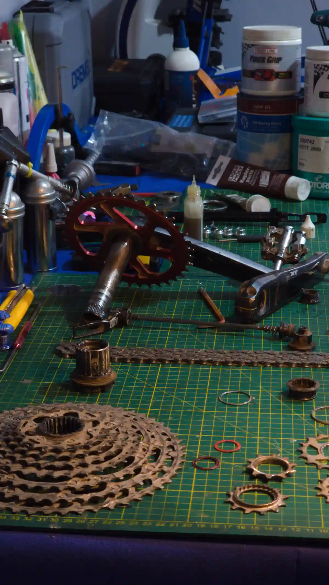
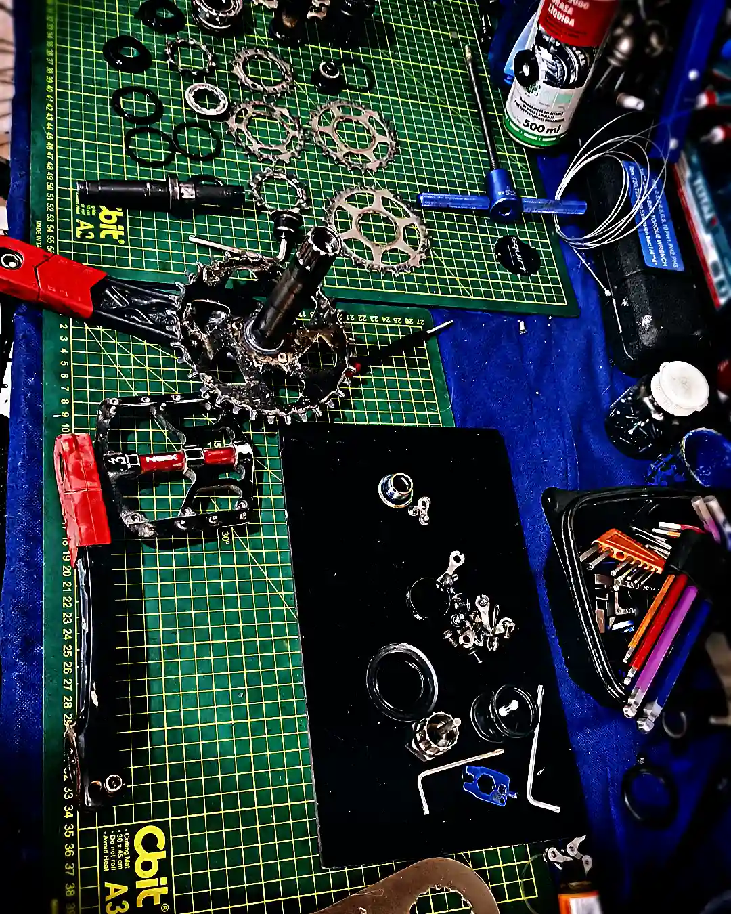
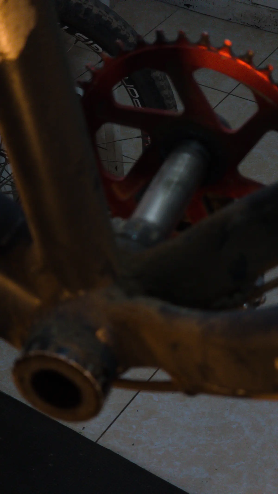
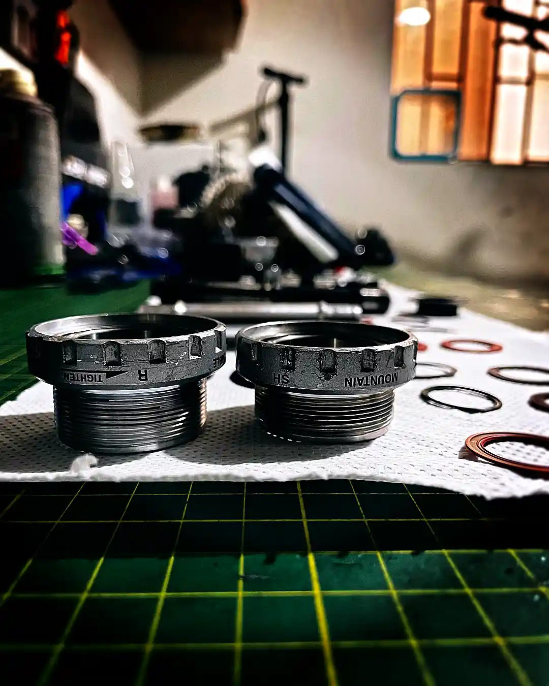

O rangido do movimento central quase nunca é o movimento central: se soa sentado costuma ser o canote; em pé, o quadro propaga o ruído e a origem real costuma estar nos pedais, tacos, coroas ou no núcleo traseiro. Diagnostique por exclusão. No BB: rosqueado = limpar e graxa/antiengripante a ~35 N·m; press-fit = nada de graxa, usar composto de retenção (Loctite 609/641/480) e, em carbono, ativador. Apertar demais não cala: quebra.
Poucos ruídos desesperam tanto quanto o rangido que aparece ao pedalar com força. E poucos se diagnosticam tão mal: a maioria desmonta o movimento central três vezes, continua soando, e ninguém explicou que o quadro inteiro funciona como caixa de ressonância. Este guia separa a física real do rangido do mito de oficina, com o procedimento por exclusão e a química correta para cada tipo de movimento central.
1. O verdadeiro responsável: é realmente o movimento central?
Antes de tocar em nada, identifique quando range. É a pista mais valiosa.
Se range sentado, pedalando suave, a probabilidade de que seja o canote do selim é altíssima: a interface canote–quadro micro-desliza com o seu peso. Se range em pé, sob torque, o chassi se torce lateralmente e o som viaja pelos tubos ocos; aí entram os falsos culpados.
Antes do movimento central: roscas dos pedais secas (engraxe-as), tacos e a interface sapatilha–pedal, parafusos das coroas (chainring bolts), canote, direção/mesa, e o núcleo da roda traseira (troque a roda de teste e se o ruído sumir, era a roda). O movimento central se revisa por último.

2. Press-fit vs. rosqueado: por que importa para o ruído
Há duas famílias de movimento central e rangem por causas distintas. O rosqueado (BSA, ITA, T47) atarraxa os copos ao quadro: se range, quase sempre é rosca seca ou torque insuficiente. O press-fit (BB30, PF30, BB86/BB92) introduz os copos sob pressão: se range, é por tolerância do quadro —uma caixa ovalada, não perpendicular ou superdimensionada— que deixa o copo micro-mover.
| Padrão | Tipo | Diâmetro caixa | Notas |
|---|---|---|---|
| BSA (inglês) | Rosqueado 1.37"×24T | 34,8 mm | O mais fácil de manter silencioso |
| T47 | Rosqueado | 47 mm | Rosqueado moderno para eixos de 30 mm |
| BB30 / PF30 | Press-fit | 42 mm | Tolerância muito estrita; sensível ao rangido |
| BB86 / BB92 | Press-fit | 41 mm | Copos de resina/alumínio sob pressão |
Convém desmontar o mito: press-fit não é "lixo". O rangido não nasce do conceito, mas da precisão de fabricação do quadro. Com tolerâncias corretas, um press-fit é tão silencioso quanto um rosqueado; com uma caixa mal usinada, nenhum sistema se salva.

3. A física do rangido: micro-movimento vs. rolamento
Aqui está a distinção que quase nenhum guia faz e que decide a solução. Há dois rangidos distintos:
Micro-movimento (fretting). Duas superfícies em contato que deslizam algumas mícrons sob carga e voltam: o copo contra o quadro, a rosca frouxa, a coroa contra a aranha. Gera um estalo seco sob torque e desaparece ao tirar a carga. A cura não é lubrificar o movimento —isso o perpetua— e sim bloqueá-lo.
Falha do rolamento. O cartucho tem corrosão (pitting) ou contaminação: gira áspero, com saltos, e costuma vir com folga. Aqui não há composto que valha: substitui-se.
Engraxar um press-fit que se move. A graxa reduz a fricção do micro-deslizamento, facilita o fretting e desgasta o alojamento de carbono ou alumínio. Em poucas saídas a graxa migra, entra ar e o rangido volta pior. Press-fit que range = composto de retenção, não graxa.

4. Diagnóstico passo a passo (por exclusão)
Sentado ou em pé?
Sentado → suspeite do canote primeiro. Em pé → BB ou falsos culpados. Esta única observação poupa horas.
Pedais e tacos
Desmonte os pedais, limpe e engraxe as roscas, revise tacos e calços. É a causa mais comum e mais barata.
Coroas e direção
Revise o torque dos parafusos das coroas e a interface da aranha; verifique direção e mesa.
Roda traseira (núcleo)
Monte outra roda e pedale em pé. Se o rangido desaparecer, era o núcleo/cubo, não o movimento central.
O movimento central, por último
Só agora desmonte pedivelas e copos. Gire o rolamento com o dedo: áspero = trocar; suave = é micro-movimento da interface.

5. A solução correta conforme o sistema
Limpeza absoluta primeiro: desengraxe roscas ou alojamento com álcool isopropílico até deixá-lo seco. Depois, o composto correto.
Rosqueado (BSA/ITA/T47): graxa ou antiengripante na rosca; em titânio, antiengripante obrigatório. Press-fit BB30 (metal-metal): Loctite 609 (retenção, preenche até ~0,13 mm). Press-fit desmontável / copos de compósito (PF30/BB86): Loctite 641 ou 480. Quadro de carbono: o carbono é inerte; o anaeróbico precisa de ativador/primer (p. ex. 7649) para curar. Alternativa robusta: copos que se rosqueiam entre si (thread-together) ou shims se a caixa estiver superdimensionada.

6. Torques de aperto reais
| Componente | Torque | Nota |
|---|---|---|
| Copos rosqueados (BSA/T47) | 35–50 N·m | Ao seu torque, não mais |
| Pré-carga de pedivela (dial/arruela) | 1–2 N·m | Só tirar folga lateral |
| Parafusos da pinça de pedivela | 12–14 N·m | Shimano Hollowtech |
| Parafusos de coroa | Conforme fabricante | Limpar e aplicar fixador médio |
Apertar demais a pré-carga mete carga axial sobre rolamentos rígidos de esferas e os destrói por fricção. O dial de pré-carga só tira a folga; o torque real é levado pelos copos. Apertar demais não silencia: arruína.
BikeLab Studio.
Perguntas Frequentes
O rangido ao pedalar é sempre o movimento central?
Não. Se range sobretudo sentado, o mais provável é o canote do selim. Ao pedalar em pé, o quadro se torce e propaga o som; em muitos casos o culpado real são as roscas secas dos pedais, os tacos, os parafusos das coroas ou o núcleo da roda traseira. O movimento central se revisa por último, por exclusão.
Devo colocar graxa no movimento central press-fit para que não range?
Não em press-fit. A graxa lubrifica o micro-movimento do copo e a médio prazo acelera o fretting e devolve o rangido. Em press-fit usa-se composto de retenção (Loctite 609 metal-metal, 641 desmontável, 480 com copos de compósito); em carbono requer-se ativador. A graxa ou o antiengripante são para roscas (BSA/T47).
Apertar mais forte elimina o rangido?
Não, e costuma danificar. Os copos rosqueados vão ao seu torque (~35–50 N·m), não mais. A pré-carga do pedivela só tira a folga lateral com muito pouco torque (1–2 N·m); apertar demais mete carga axial sobre os rolamentos e os destrói. Apertar demais não cala: quebra.
Press-fit é um mau projeto que sempre range?
Não necessariamente. O rangido não nasce do sistema, mas da tolerância do quadro: uma caixa ovalada, não perpendicular ou superdimensionada provoca micro-movimento. Com tolerâncias corretas, composto adequado e, se for preciso, copos thread-together ou shims, um press-fit pode ser tão silencioso quanto um rosqueado.
Como distingo se range o copo ou o rolamento?
Tire os pedivelas e gire o rolamento com o dedo: se sentir áspero ou com saltos, o cartucho está danificado e se troca. Se gira suave mas a bike range ao aplicar força real, o copo se move dentro do quadro: a solução é composto de retenção ou ajustar a tolerância, não trocar o rolamento.
Referências
- Park Tool — Troubleshooting a Noisy Drivetrain.
- Hambini Engineering — Bottom bracket press-fit and creaking: análise de tolerâncias; graxa vs. composto de retenção.
- Fit Werx / BBInfinite — Causas de caixa não perpendicular/ovalada; Loctite 609 e compressão radial.
- Henkel Loctite — Fichas técnicas 609 / 641 / 480 e ativador 7649 (retenção e cura em substratos inertes).
- Padrões de caixa de movimento central (BSA 1.37"×24T, T47, BB30 42 mm, BB86/BB92 41 mm) e torques de aperto de fabricantes (Shimano, SRAM).